progetti
 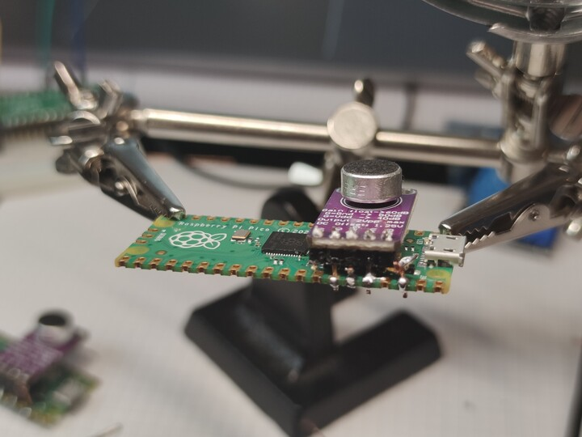
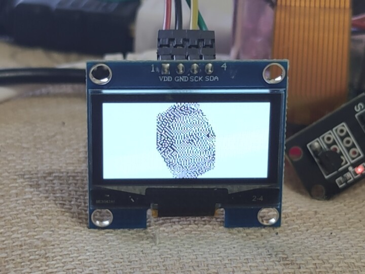
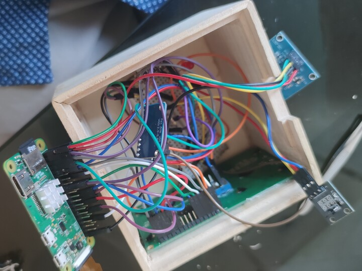
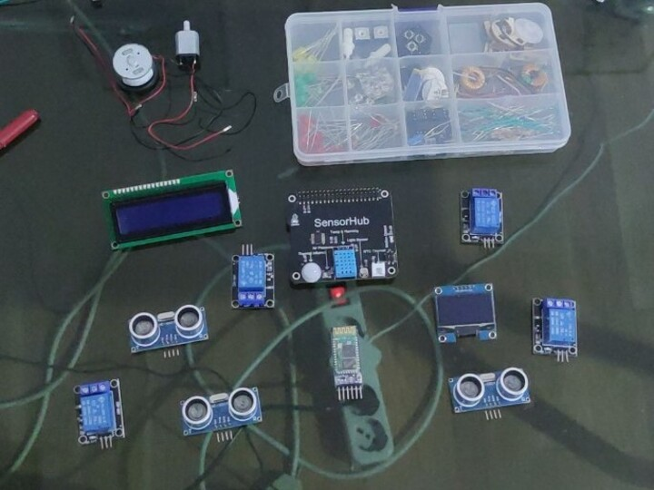
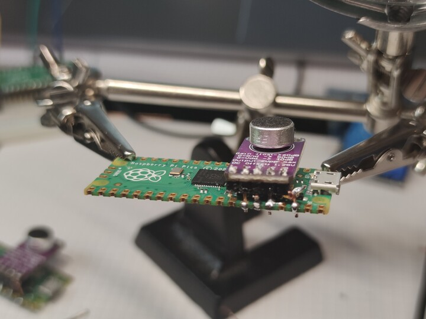
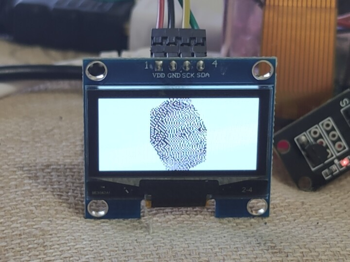
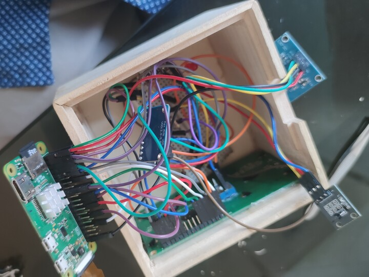
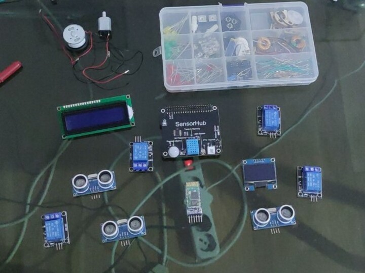
Hello World!
"The journey of a thousand miles begins with one step"
Sapiens V2
Seconda iterazione di una mano bionica controllata con dei sensori EMG e un modello di Machine Learning, progettata per chi non ha più una mano, ma manca ancora qualcosa...
 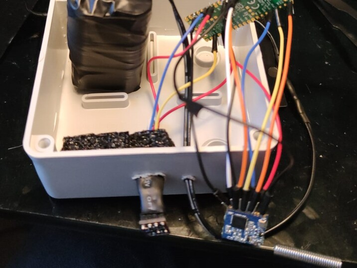
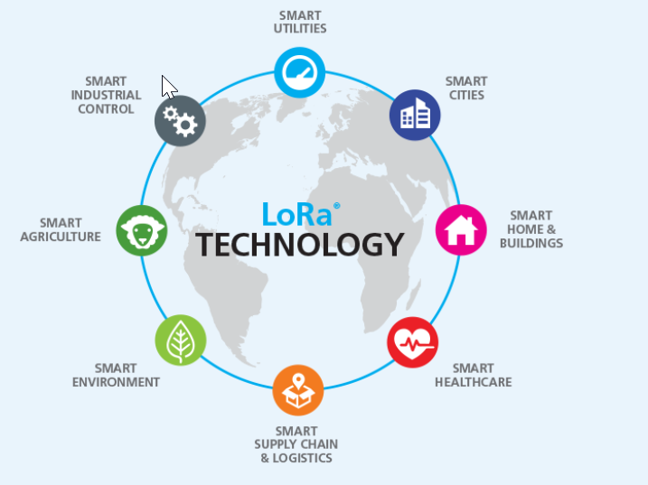
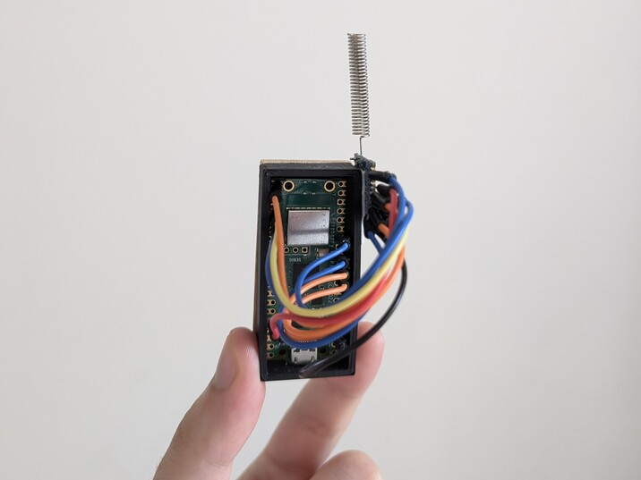
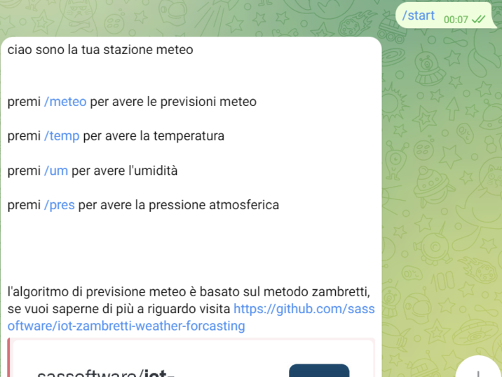
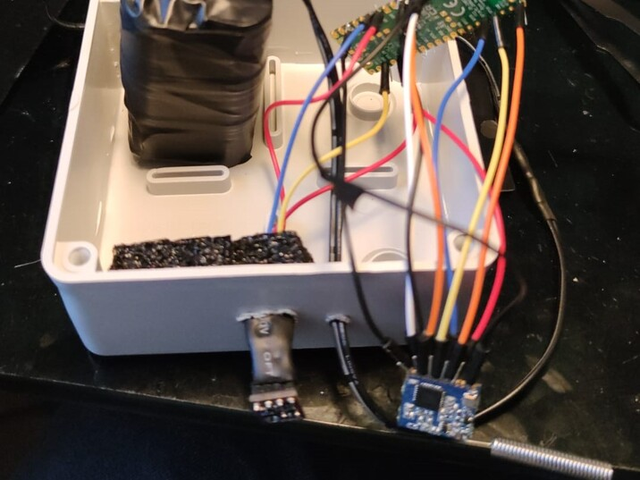
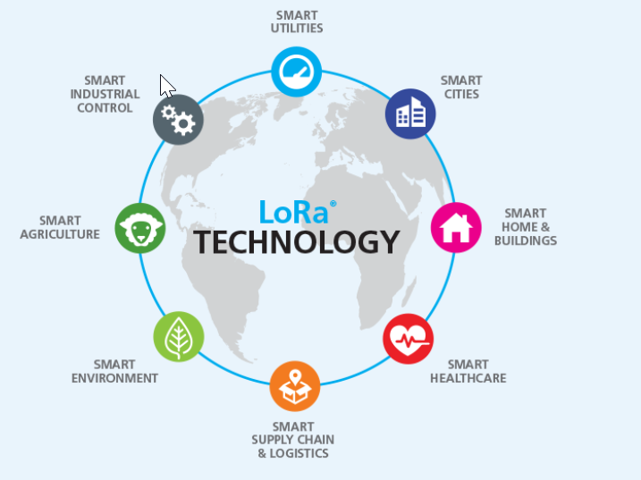
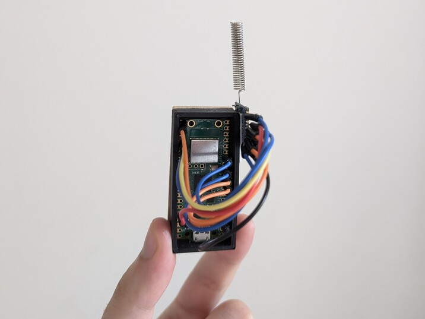
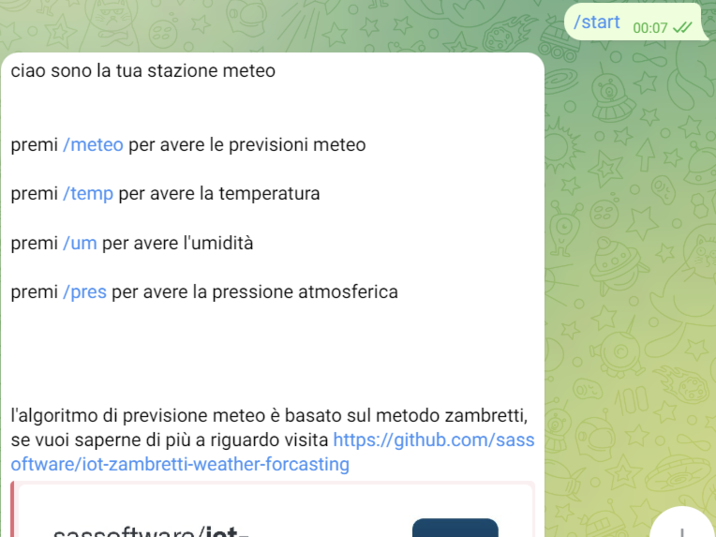
Stazione Meteo LORA
Capace di monitorare il meteo anche in zone senza copertura internet grazie alla comunicazione LORA
Annaffiatore automatico
Un sistema che permette di monitorare in tempo reale l'umidità del terreno e annaffiare la pianta quando quest'ultimo risulta troppo secco

ISS tracking
un dipsositivo che traccia in tempo reale la posizione della Stazione Spaziale Internazionale
Un Girasole
Come un vero girasole segue sempre il sole, grazie a dei LDR e un servo motore

Stampa 3d
la mia esperienza col mondo della stampa 3d (work in progress)
Tesi
un approfondimento su quello che è stata la mia tesi universitaria